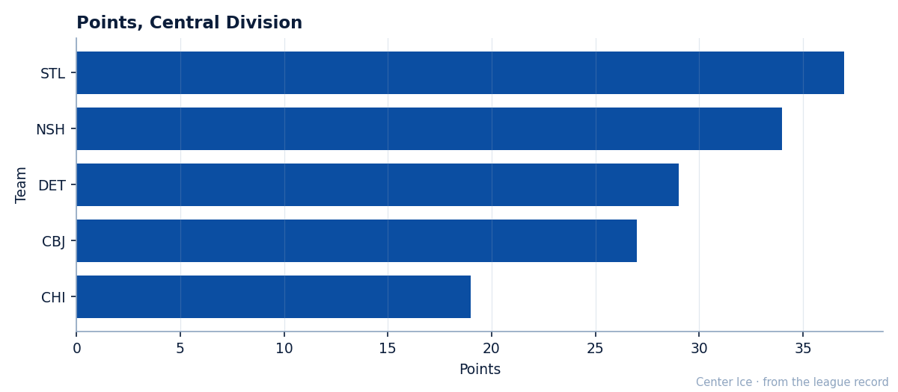
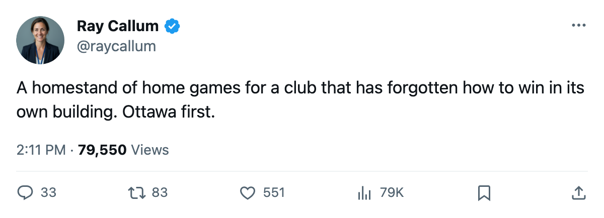
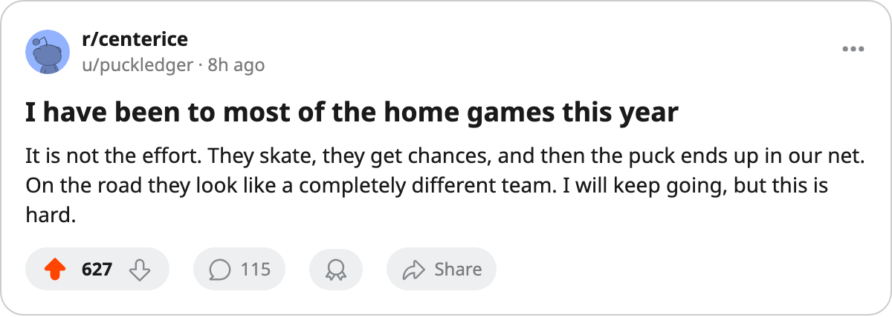

Chicago Is 1-10 at Home, and Three Straight Home Games Begin Tonight
The Blackhawks have 19 points, last in the Central, and the next three nights are in their own building.
 Ray CallumSenior correspondent · Home Ice Network
Ray CallumSenior correspondent · Home Ice Network
 Chicago Blackhawks open a three-game homestand tonight against
Chicago Blackhawks open a three-game homestand tonight against  Ottawa Senators, the first meeting of the season between the clubs, and they own the fewest home wins in the league: 1-10.
Ottawa Senators, the first meeting of the season between the clubs, and they own the fewest home wins in the league: 1-10.
Chicago has 19 points in 24 games, last in the Central, and the next five nights are the best chance the schedule will give it.  Mighty Ducks of Anaheim arrive on 2005-12-06 and
Mighty Ducks of Anaheim arrive on 2005-12-06 and  Tampa Bay Lightning on 2005-12-08, then the Blackhawks go to the Islanders on 2005-12-10 and the Rangers on 2005-12-11.
Tampa Bay Lightning on 2005-12-08, then the Blackhawks go to the Islanders on 2005-12-10 and the Rangers on 2005-12-11.

Chicago is 1-10 at home and 6-7 away, with 51 goals for and 67 against on the season, and the last ten games have run 21 goals for and 22 against. A club scoring at that rate should have more than 19 points to show for 24 games.
The crease has not settled.  Jocelyn Thibault87 has 15 of the 24 games, 62% of the club's work, and Ari Ahonen89 has 11, 46%. Two goaltenders have shared the net on a last-place team, and neither has taken it.
Jocelyn Thibault87 has 15 of the 24 games, 62% of the club's work, and Ari Ahonen89 has 11, 46%. Two goaltenders have shared the net on a last-place team, and neither has taken it.
No Chicago player sits on the injured list. The coach has his group for this stretch, which is more than the clubs chasing the Blackhawks can say.
Anaheim comes in on a three-game win streak with 25 points, and  Ilja Bryzgalov75 has taken the top job in goal from
Ilja Bryzgalov75 has taken the top job in goal from  Jean-Sebastien Giguere93. The Ducks are 5-8 on the road.
Jean-Sebastien Giguere93. The Ducks are 5-8 on the road.
Tampa Bay has 29 points, has lost its last game, and is 4-10 away from home.
Ottawa is 14th in the East on 19 points and 3-7 on the road. The Senators lost their last game too.

